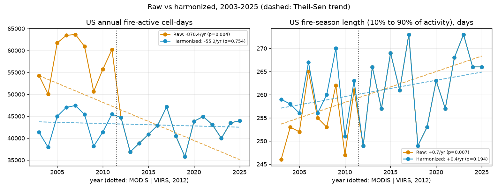

ignopticon.earth
NASA Space Apps 2026 · Harmonization of MODIS and VIIRS Hot Spots
Open 12-hour wildfire spread forecasts, scored against NASA satellite perimeters, on 26 years of harmonized MODIS and VIIRS fire history.
Babylonian Belugas
ignopticon.earth
The problem
1 km pixels. Misses small fires. The only record before 2012.
375 m pixels. Sees far more fire. Joined naively, the record jumps in 2012.
12-hour spread forecasts exist, but few are open and almost none publish how well they do on real fires.
So long-term trends are distorted, and nobody can check a forecast.
ignopticon.earth
Harmonization · History page

−870/yr
raw trend (p = 0.004), with a 2012 step of −15,915 cell-days
−55/yr
harmonized (p = 0.75): the step and the false decline disappear
History page: burning calendar raw vs harmonized, this week against 2003-2025, any past day with the full FIRMS archive.
ignopticon.earth
Fire watch, built for crews
NASA FEDS perimeter, VIIRS hotspots, HRRR wind. ELMFIRE most-likely case and an 11-run worst case, with people inside each.
Radio and phone coverage near the fire, modelled with SPLAT! on terrain from cell towers and the crew's own VHF/UHF repeaters.
Roads and trails that avoid the active edge, with a fastest route and a best-coverage route that cuts time out of contact.
Works offline: each fire's map, coverage and road network are cached on the device, so routing runs without signal. Advisory only.
ignopticon.earth
Verified on held-out days
0.32
ELMFIRE: share of next-12 h growth located
0.25
distance buffer around the fire
0.22
downwind rule
97 uncontained fire-days, Aug 3-5 2026, fires frozen before any run. Ahead of both rules on every day. On large fires it doubles the buffer (0.26 vs 0.12); on small fires it ties.
Each method marks the true growth area; truth is the NASA FEDS perimeter 12 h later.
ignopticon.earth
Against an operational system
| Growth located, equal area | Aug 12-14 |
|---|---|
| Ignopticon (ELMFIRE) | 0.33 |
| Distance buffer | 0.27 |
| PyreCast median (Pyregence) | 0.26 |
25 of 33
fire-days where we located growth better than PyreCast
Our worst case caught 90.5% of observed growth on held-out fires, graded on capture.
PyreCast forecasts from its public archive; uncontained fires frozen before any run; truth is the NASA FEDS perimeter 12 h later. We found no public 12 h skill benchmark, so we built one.
ignopticon.earth
Honest limits, next steps
Unsuppressed spread potential: firefighting not modelled. Few issue days. FEDS edges uncertain by ~375 m. Fuel moisture estimated. US only. Not for evacuation decisions.
More days and fires in the PyreCast comparison, station-checked fuel moisture and wind, longer ensembles for the worst case, beyond the US.
Every method, score and negative result is on the Technical page. Data: MOD14A1, MYD14A1, VNP14A1, VJ114A1, FIRMS, FEDS, LANDFIRE, 3DEP, HRRR, gridMET, WFIGS, GHS-POP, OpenStreetMap, FCC towers.
ignopticon.earth · Babylonian Belugas